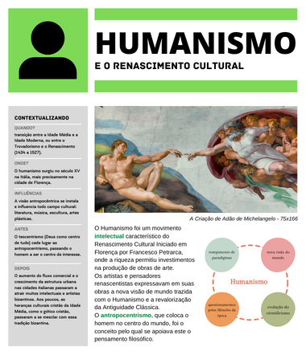
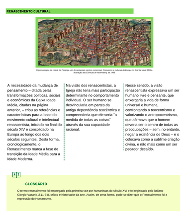
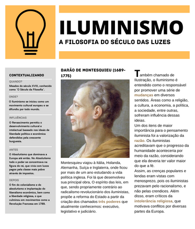
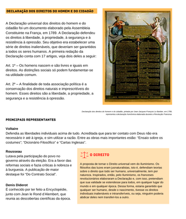
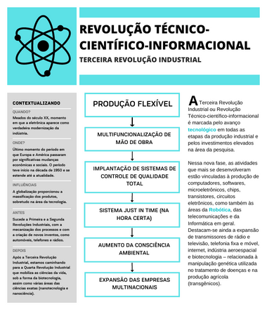
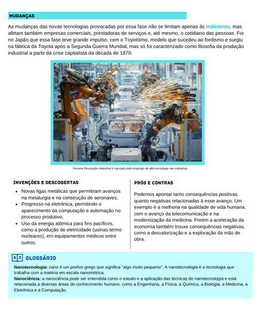

Portfólio
Tabela de Hábitos Culturais
Releitura da obra ‘a Escola de Atenas’
Infográfico Grupos Étnicos de SC
AV. TRIMESTRAL - PARTE 2 - 2º TRIMESTRE
Transição da Europa Medieval para a Idade Moderna
Humanas
e suas tecnologias
Tabela de Hábitos Culturais
Releitura
AV. TRIMESTRAL - PARTE 2 - 2º TRIMESTRE
     